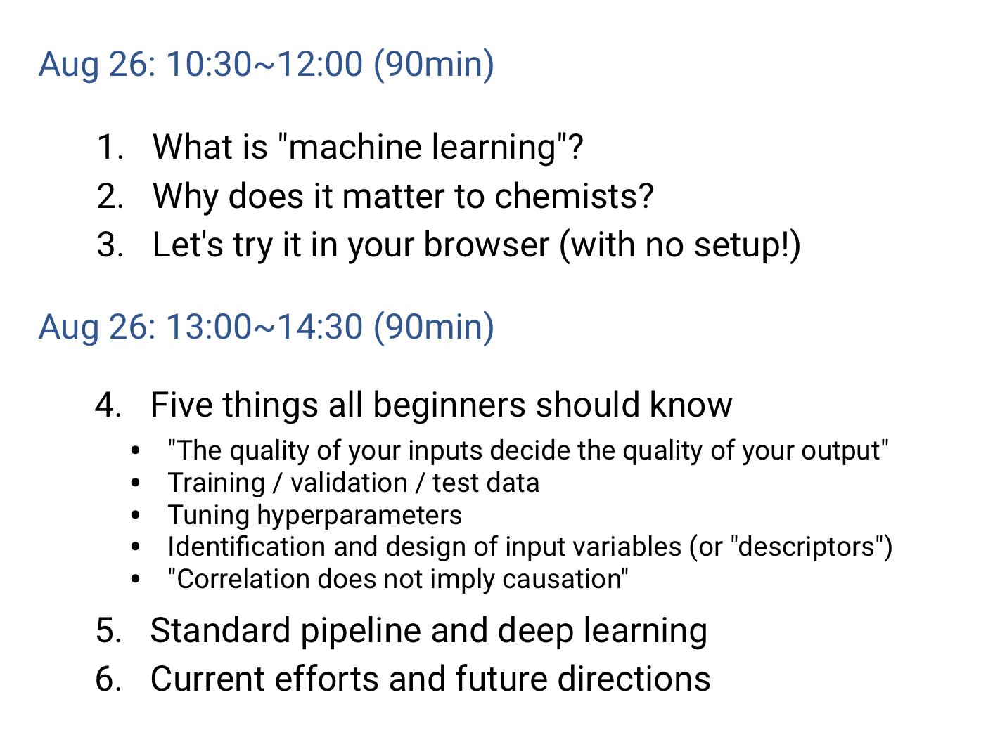

HSI 2020
HSI (Hokkaido Summer Institute)
Lecturer
Advanced Computational Chemistry
https://hokkaidosummerinstitute.oia.hokudai.ac.jp/courses/CourseDetail=G131
Date: Aug 26, 2020
- Applied Machine Learning for Chemistry I (10:30am-noon)
- Applied Machine Learning for Chemistry II (1:00pm-2:30pm)

Slides and Codes
References
Links
Wikipedia on various "data-driven" fallacies
Ichigaku Takigawa